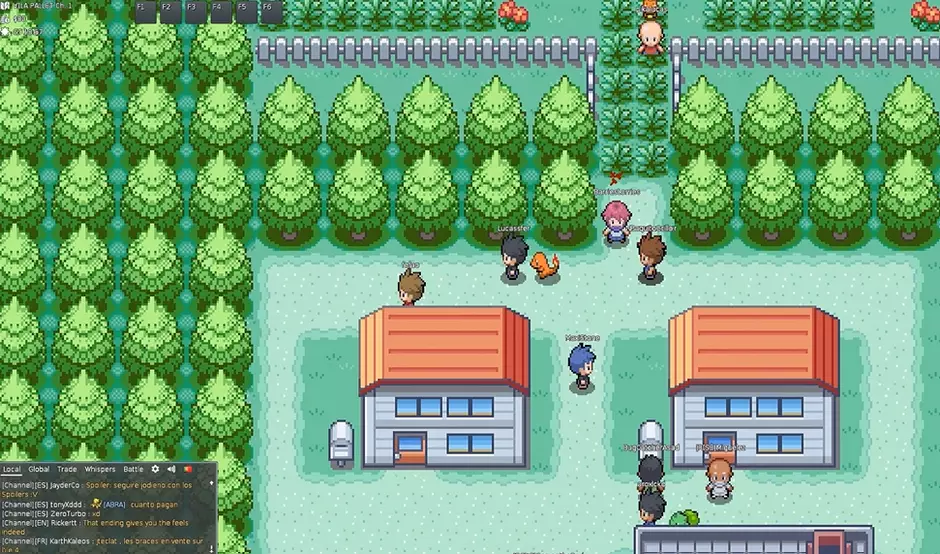

Temos que pegar!

Pokémon (ポケモン, Pokemon) - é uma franquia de mídia que pertence a The Pokémon Company, tendo sido criada por Satoshi Tajiri em 1995. Ela é centrada em criaturas ficcionais chamadas "Pokémon", que os seres humanos capturam e os treinam para lutarem entre si com seus ataques de diversos tipos. A franquia começou com um par de jogos lançados para o Game Boy original, desenvolvidos pela Game Freak e publicados pela Nintendo. Atualmente, a franquia se estende em jogos, cartas colecionáveis, série de televisão, além de filmes, mangás e brinquedos. Pokémon é franquia de mídia de jogos mais bem sucedida e lucrativa do mundo. Em 2006, a franquia celebrou seu aniversário de 10 anos. As vendas dos jogos (incluindo home console games, como Hey You, Pikachu!, para Nintendo 64) acumularam mais de 200 milhões de cópias vendidas. Em novembro de 2005, a 4Kids Entertainment, que tinha conseguido o licenciamento da série animada, anunciou que havia concordado em não renovar o contrato da representação da franquia. A Pokémon USA Inc. (atualmente The Pokémon Compay Internacional), uma subsidiária da japonesa Pokémon Co., passou a supervisionar todas as licenças de Pokémon fora da Ásia. Até 2024, a franquia de Pokémon acumulou um valor estimado de U$ 100 bilhões de dólares ao redor do mundo .
Nome
O nome Pokémon é uma abreviação da marca japonesa Pocket Monsters (ポケットモンスター, Poketto Monsutā). O termo Pokémon, além de se referir a própria franquia Pokémon, também se refere às mais de 1000 espécies de Pokémon. A palavra "Pokémon" é usada no singular e plural para o nome individual de cada espécie; a gramática correta é "um Pokémon" e "muitos Pokémon", bem como "um Pikachu" e "muitos Pikachu". No entanto, em Pokémon Red, Blue e Yellow, alguns NPCs se referiam a Clefairy e Diglett no plural, mostrando "CLEFAIRYs" and "DIGLETTs", respectivamente. Isso foi arrumado em FireRed e LeafGreen.)
Concepção
Uma história animada de como Satoshi Tajiri chegou a conceber "Pokémon" Tajiri teve a ideia de Pokémon por volta de 1989 ou 1990, quando o Game Boy foi lançado. O conceito do universo Pokémon foi inspirado no passatempo do diretor executivo Satoshi Tajiri de colecionar insetos quando era criança, Então como as crianças estavam prestando mais atencão aos videogames do que a brincar ao ar livre (Ou fazer isso) Ele decidiu fazer um videogame onde as crianças podiam fazer isso, Mas com monstros! Os jogadores dos jogos são chamados de Treinadores Pokémon e dois dos principais objetivos (na maioria dos jogos Pokémon) para os Treinadores são: completar a Pokédex, capturando todas as espécies Pokémon disponíveis; e treinar seu time de Pokémon para competir contra o time de outros Treinadores e, eventualmente, se tornar o mais forte Treinador: um Mestre Pokémon. O conceito de capturar, treinar e batalhar estão presentes em quase todas as versões da franquia Pokémon, incluindo nos jogos, no anime e na série de mangá, e no jogo de cartas.
Jogos
Os jogos originais de Pokémon foram role-playing (RPGs) com elementos de estratégia e foram criados por Satoshi Tajiri para o Game Boy. Esses RPGs, e suas sequências, remakes e traduções em inglês, são ainda considerados os "principais" jogos de Pokémon, além de serem os jogos que os fãs da série geralmente se referem quando usam o termo "jogos de Pokémon". Todas as propriedades Pokémon licenciadas são supervisionadas pela The Pokémon Company International, sendo divididas por gerações. Essas gerações são cronologicamente divididas pelo seu lançamento; a cada determinado número de anos, quando uma sequência oficial nas séries RPGs principais é lançada, contendo novos Pokémon, personagens e conceitos de jogabilidade, aquela sequência é considerada o começo de uma nova geração da franquia. Os jogos principais e os spin-offs, anime, mangá e cartas colecionáveis são atualizados com as novas propriedades de Pokémon toda vez que uma nova geração começa.
Voltar